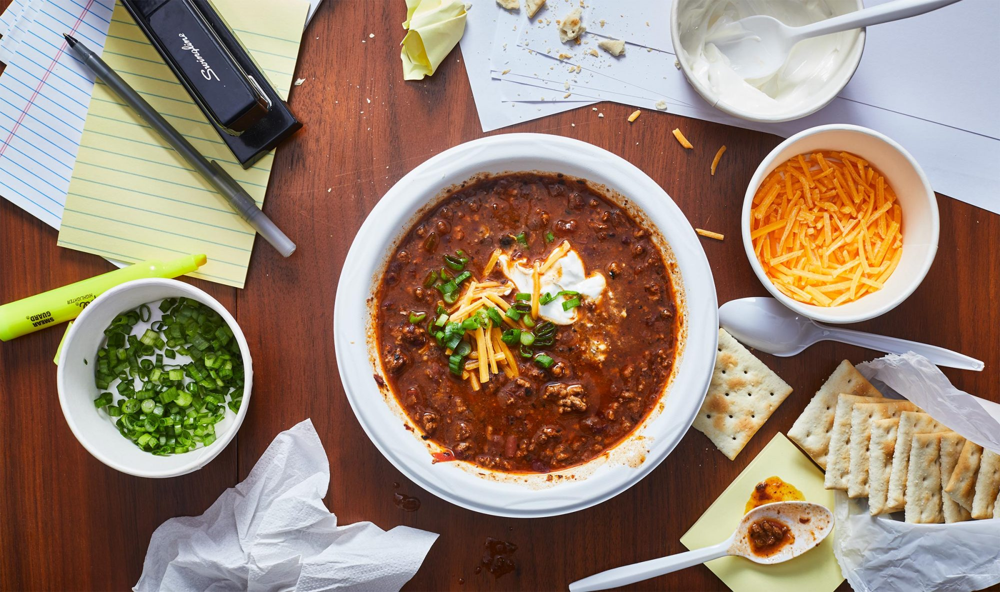

Kevin's Famous Chili

Introductions
Don’t be afraid to play! Like it spicer? Add red pepper flakes or Spicy Bush’s® Chili Beans.
Like it thicker? Feel free to cook this over the stove all day. (Just add water as needed for
best consistency.)
Instructions
- In a large pot, sauté the chopped onion, green bell pepper, and garlic in oil over medium-high heat.
I like to use grapeseed oil because it’s a little less oily.
- Add in the ground turkey or beef. Before the meat has completely cooked, add the tomato paste.
Finish browning the meat completely.
- Stir in the remaining ingredients, except the beans and the cheese. Bring to a boil. Reduce heat.
Cover and simmer on low heat for 30 minutes (or longer until the desired consistency is reached),
stirring occasionally.
- Then, 20 minutes before serving, add the beans. You can’t add the beans in right away or they get mushy.
- Finish with sharp cheddar cheese. Any leftovers are easy to freeze!